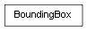

class cymel.core.datatypes.boundingbox.BoundingBox¶

-
class
cymel.core.datatypes.boundingbox.BoundingBox¶ ベースクラス:
object3Dバウンディングボックスクラス。
Methods:
clear()contains(p)cornerPoints()コーナーの8点を得る。 depth()distanceBetween(bb)別のボックスとの距離を得る。 distanceToPoint(pnt)点との距離を得る。 expand(v)height()intersectedBox(bb)別のボックスとの交差領域を新しいボックスとして得る。 intersectedVolume(bb)別のボックスとの交差領域の体積を得る。 intersectedVolumeOrDistance(bb)別のボックスとの交差領域の体積、又は距離の反転を得る。 intersects(bb[, tol])max()min()transformUsing(m)width()Methods Details:
-
clear()¶
-
contains(p)¶
-
depth()¶
-
distanceBetween(bb)¶ 別のボックスとの距離を得る。
パラメータ: bb ( BoundingBox) -- 別のバウンディングボックス。戻り値の型: float
-
expand(v)¶
-
height()¶
-
intersectedBox(bb)¶ 別のボックスとの交差領域を新しいボックスとして得る。
交差していなければ None となる。
パラメータ: bb ( BoundingBox) -- 別のバウンディングボックス。戻り値の型: BoundingBox
-
intersectedVolume(bb)¶ 別のボックスとの交差領域の体積を得る。
パラメータ: bb ( BoundingBox) -- 別のバウンディングボックス。戻り値の型: float
-
intersectedVolumeOrDistance(bb)¶ 別のボックスとの交差領域の体積、又は距離の反転を得る。
交差していればその領域の体積が返され、 していなければ距離が負数で返される。
パラメータ: bb ( BoundingBox) -- 別のバウンディングボックス。戻り値の型: float
-
intersects(bb, tol=0.0)¶
-
max()¶
-
min()¶
-
transformUsing(m)¶
-
width()¶
-